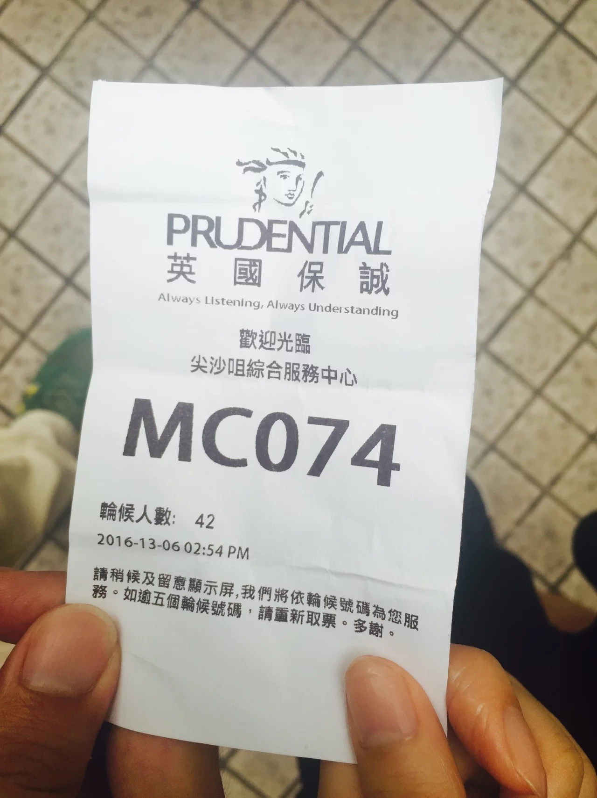
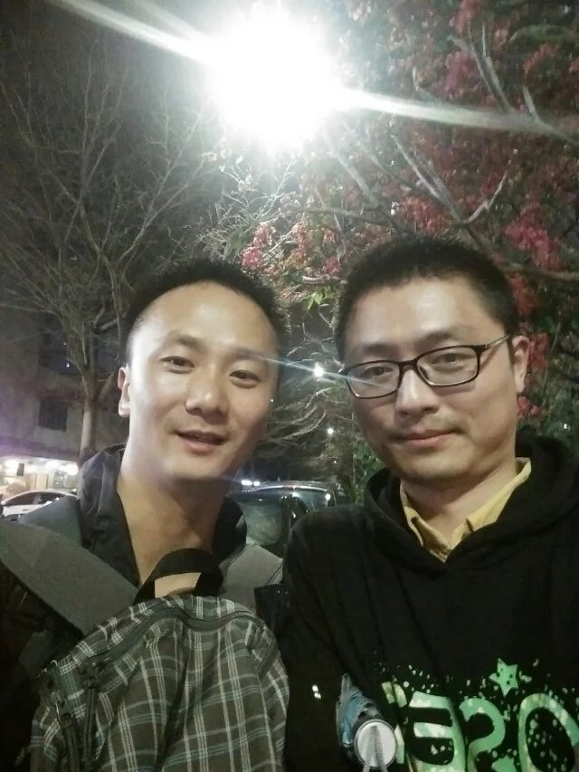
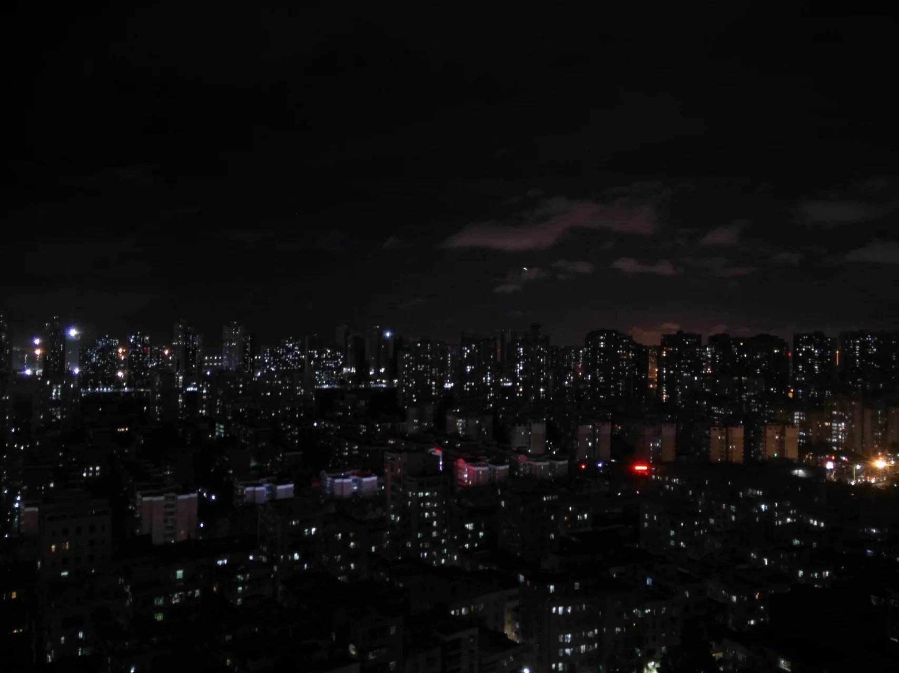
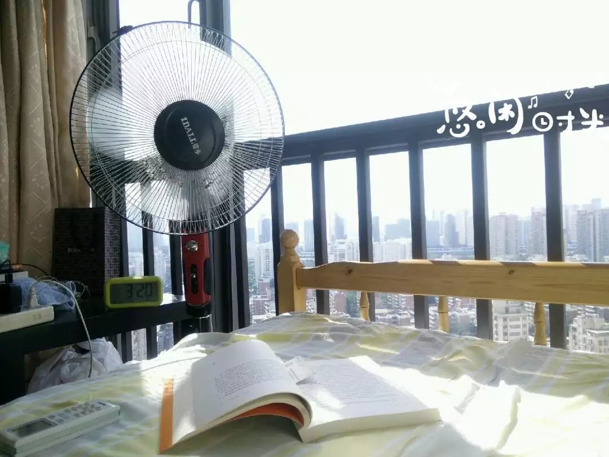
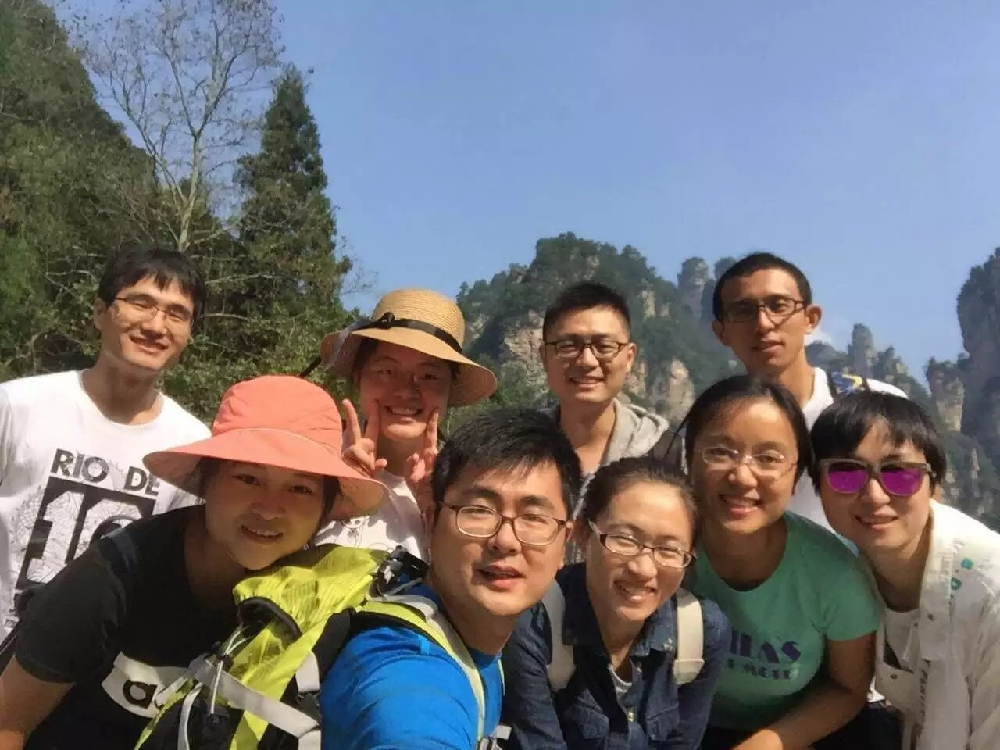
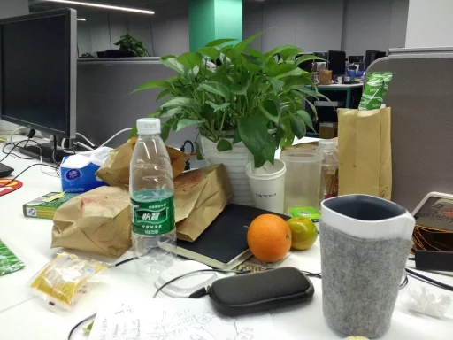

2016总结
关于生活
时光之里，南山北海；你我之间，人来人往。
2月底，从老家回到大新的当晚腹痛，大半夜骥哥陪我去了南山医院，后诊断为肾结石，所幸是可以做超声波碎石，免受皮肉之苦。两次超声手术后排出，前前后后十来天。印象最深的是有一晚，痛得无法入睡，捂着肚子，蹲在地上，跟豆芽喵对望，忍到第二天清晨早饭没吃饿着肚子一个人去医院做造影，当护士将混着碘剂的盐水用注射器从静脉打进身体里时，那股寒意一直蔓延直到内心。后面爸妈不放心，从老家过来照顾了一周。

4月份，偶然的机会认识了Mandy。后面各种拖，直到6月份，赴港把保险的事情办完。

那座从未离开过的城市，过往的每一年都是要回去的，见见朋友、聊聊天、喝喝酒。今年倒是没有，好的是年初维曦入职培训过来这里，约在东滨路的木屋烧烤短暂相聚。

8月份，房租到期，搬了新家。一街之隔，时间上刚好续上。高层，从房间里一眼望去，万家灯火。主要是安静，可以睡好觉。


9月份，同学聚会张家界，完成了那年毕业旅行的夙愿之一。那份情还在。

从14年接触P2P，这些年全靠人品这些年来收益还算过得去，收益已经赶得上支出了。
关于工作
今年是在云中飞这四年多来，最累的一年，业务急剧增长，所在的数据部门，数据量增长了20多倍，对系统产生的压力可想而知，加班到10点是家常便饭，多次见到凌晨的深圳湾，表妹说要举报这个加班窝点。这一年，生活除了工作，好像也没别的了。工作有点了感觉，隐隐约约知道自己的边界在哪里。

2017——往事浓淡，色如清，已轻；经年悲欢，净如镜，已静。